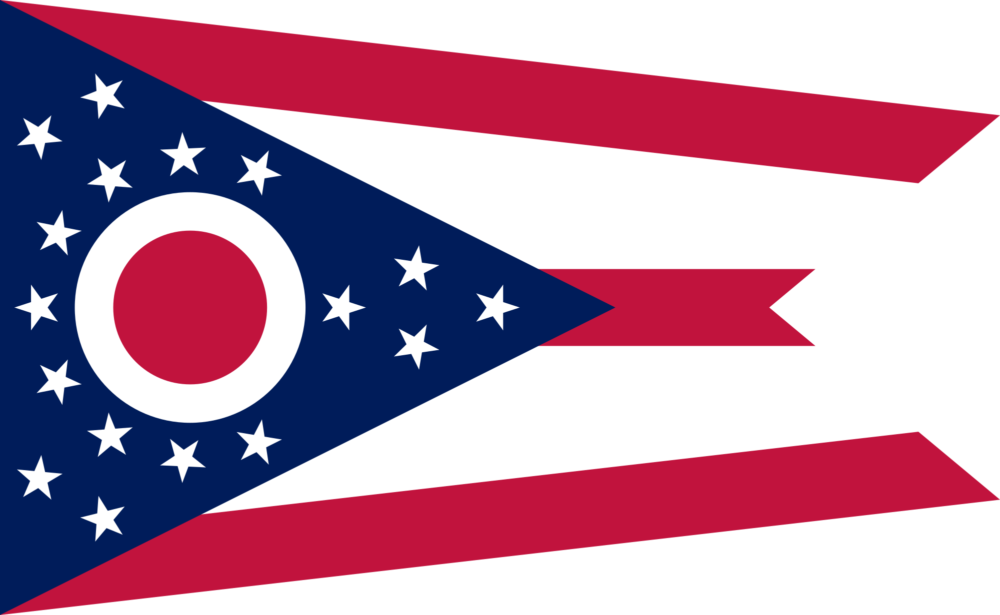
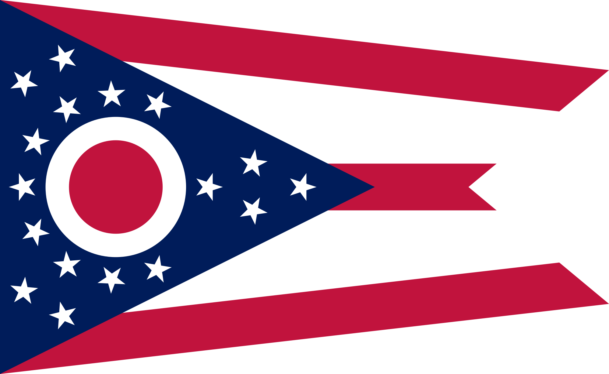

Printing
10 - 18 September 2018
This week, we worked with three different types of printers: Garment, Sublimation, and UV. We used the program CorelDRAW to create the
files needed for using these printers. Like Fusion 360 last week, CorelDRAW has a good user interface and is not overly confusing.

Assignment 1: T-Shirt
First, we were instructed to design an original, marketable T-Shirt and print it on the Brother GT-361 garment printer. The T-shirt
design had to have something to do with either Western Reserve Academy, Hudson, or Ohio. I chose to create a shirt for Ohio.

At first, I thought I would use the clock from Hudson's clock tower as first O in "OHIO," in order to incorporate Hudson into my shirt
as well. However, upon seeing what such a design looked like, I decided instead to use the Ohio state flag for that purpose instead,
since I felt it did a better job of unifying my T-Shirt and because the front of my shirt was easier to read if I used the flag.
 

I also created a back for my T-Shirt, modeled after an athletic jersey, with "Ohioan" as the name and "OH" taking the place of
numbers on the back.

I think my shirt turned out very well. I like how it looks, and there is only one thing I would change: in hindsignt I realized
that on most athletic jerseys, the name is in all capital letters, which is not the case on the back of my shirt, so if I were to
reprint this shirt, I would change "Ohioan" to "OHIOAN." Other than that, I think my shirt was very visually pleasing,
effective, original, and marketable.
Assignment 2: Sublimation Printer
After creating our T-Shirts, we needed to use the sublimation printer, specifically the Sawgrass 800, to print a design of our choice
onto a medium of our choice. In science, sublimation is the process of a material undergoing a phase change directly from a solid to
a gas, without ever going through the liquid state. Similarly, dye sublimation is the process of transferring, using heat, an
image from a special piece of paper directly onto the substrate. After this process, the image remains on the substrate and will not
come off.

Of the variety of available substrates, I chose to perform dye sublimation on a keychain, and I chose to use a space-related image.
I went to Space Camp this summer, and my team's name was Chandra, so I located a picture of NASA's Chandra X-Ray Telescope to use
for my keychain. I put the name and year on my keychain, as well, to commemorate my experience at Space Camp. I used CorelDraw to
create the file I needed.
Sublimation printing is a fairly simple process. I printed a mirror of the image I wanted to print using the Sawgrass printer. Then,
I put the image against my blank keychain and sandwiched those things between two sheets of protective paper and placed that
entire configuration in the heat press. Because my substrate was a metal keychain, I set the heat press to 400 degrees
Fahrenheit and medium pressure and left my keychain under the press for 75 seconds.

My keychain turned out fairly well